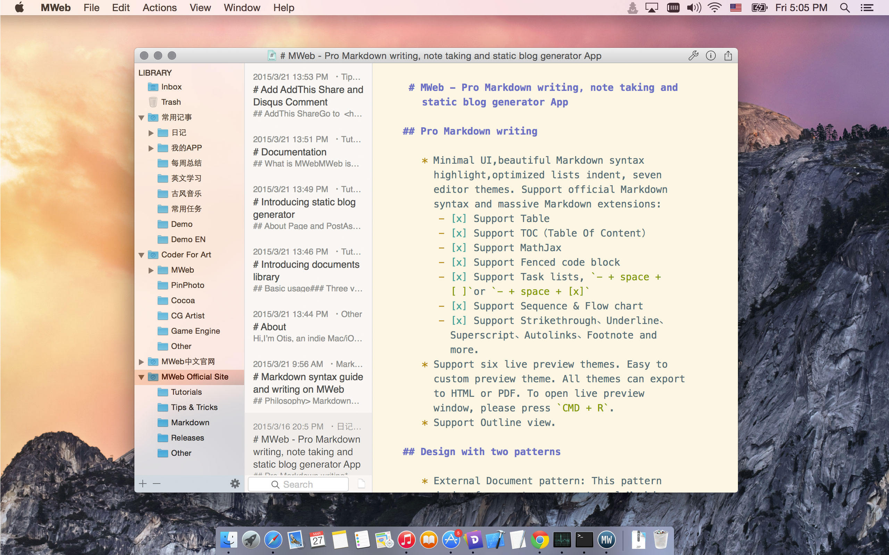
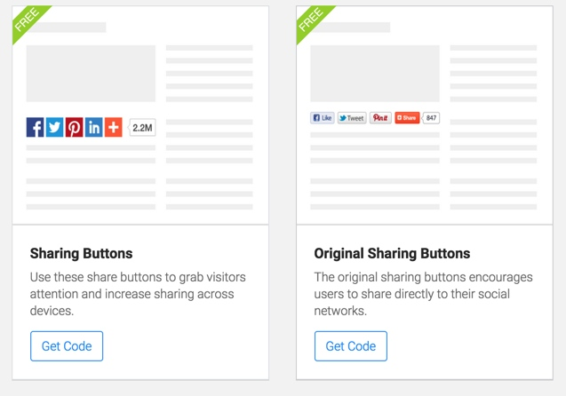

因为这次发布的功能有点多，所以一开始提交到 MAS 前就写了两篇文章特别介绍了两个重要功能，这次更新主要有：
CMD + E 或者用菜单：View - Open External 打开外部文档模式，点 App 左下脚的 + - Add External Source... 增加文件夹。更多介绍请看提前写好的介绍文章：http://zh.mweb.im/mweb-1.4-add-floder-octpress-support.html
Read On →Chinese: http://zh.mweb.im
English: http://www.mweb.im
CMD+Shift+V paste PNG pictrue.- + space + [ ]or - + space + [x]Fixed some crash.
Site themes updated: greyshade, octopress themes updated for support setting Comment and Share code,MathJax ,sequence and flow chart. Three variables added like below:
{{ commentAndShareCode }}
{{ seqAndFlowChartSupport }}
{{ mathJaxSupport }}
Updated template pages:
{{ seqAndFlowChartSupport }}, {{ mathJaxSupport }} code, please check this link: https://github.com/oulvhai/MWeb-Themes/blob/master/greyshade/footer.html{{ commentAndShareCode }} code, please check this link: https://github.com/oulvhai/MWeb-Themes/blob/master/greyshade/post.html中文请看这个网址：http://zh.mweb.im/mweb-comment-and-share-help.html
Go to https://www.addthis.com and sign in.
Click Account Settings - Profiles to add new Profile. Go to Dashboard - Shares - code on page to select share style like below:
